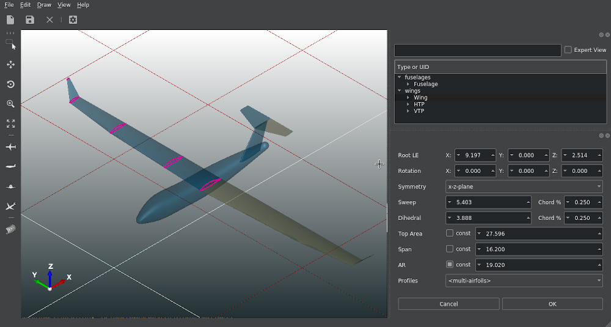
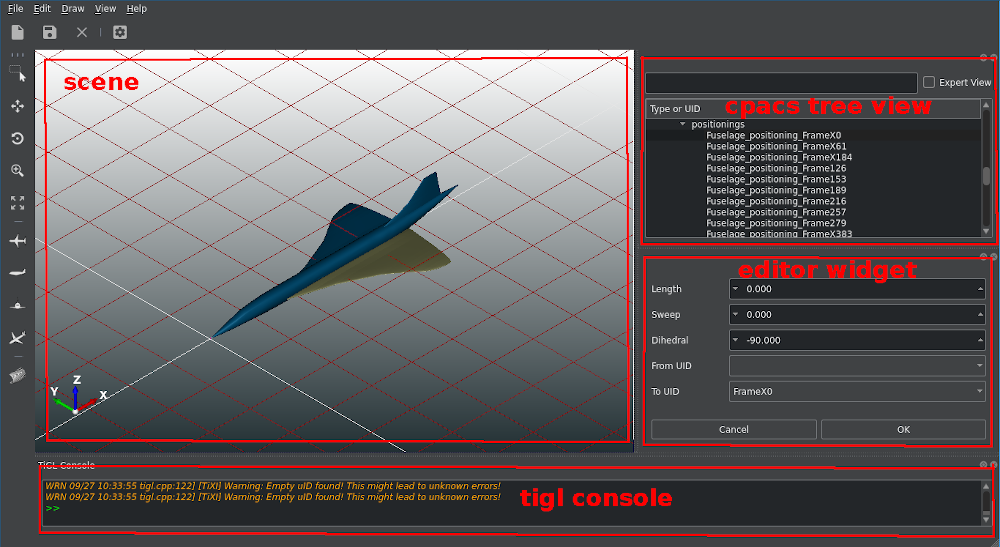
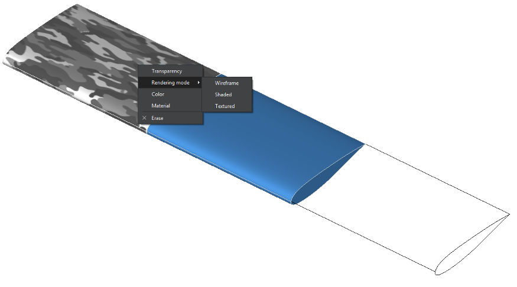

Overview
The TiGLCreator is a 3D viewer and editor for CPACS geometries. TiGLCreator is based on the TiGL library.

The TiGLCreator showing a CPACS model
Features of TiGLCreator
- 3D Visualization of CPACS, STEP, IGES, BREP, and STL files
- Creation of screenshots
- Conversion of geometries into standard CAD file formats
- Conversion into mesh formats such as STL, VTK, and COLLADA (for Blender rendering)
- A powerful scripting console that allows automated typical workflows, such as creating screenshots or making some debug plots.
- CPACS-specific:
- Display single CPACS entities such as wings, fuselages, profiles and guide curves
- Compute and export a trimmed aircraft configuration
- Compute discrete points on wings/fuselages using TiGL functions
- Edit high-level wing parameters see available parameters here
- Edit high-level fuselage parameters see available parameters here
- Edit wing sections
- Edit fuselage sections
- Edit positionings
- Standardize positionings
- Create wings
- Create fuselages
- Undo/Redo operation
Widgets Presentation
Here, we will briefly present the different widgets that are available in TiGLCreator. Note that each widget can be detached, moved around, attached again or closed. To close or activate the widgets use the shortcut or navigate to the display menu (View->Display).

Main widow and widgets of TiGLCreator
The Scene
The scene displays the 3D tigl object. You can choose which object you want to draw in Draw menu. Remark: No modification on the object can be performed from the scene. The scene is only a display interface.
The CPACS Tree View
The CPACS tree view shows the CPACS tree structure. When you click on an element in the tree, the correct editor widget is activated. By default, the tree view widget filters the objects to display only the most important ones. You can see all the CPACS objects by activating the "Expert view" mode at the top of the tree view widget. You can also filter the tree by a UID or CPACS type by typing in the line next to the "Expert view" checkbox.
The Editor Widget
The editor widget displays the parameters that can be modified for the object selected in the tree view.
The Console
A page is dedicated to the console: Please visit this page for further information
Navigation in the 3D View
The most often used navigation functions are included in the tool bar
Here, one can use
- "Select shapes" to select some parts ("shapes") of the geometry with the mouse.
- "Pan view" to translate the whole geometry with the mouse
- "Rotate view" to rotate the view point with the mouse
- "Zoom" to zoom in or out with the mouse
- "Fit to view" to fit all objects into the current view
- "Top" to see the top view of the geometry
- "Side" to see the side view of the geometry
- "Front" to see the front view of the geometry
- "Axonometric" to see the axonometric view of the geometry
- "Reflection plot" to visualize C1 and C2 surface discontinuities
More functions can be found in the "View" menu.
Keyboard Shortcuts
All actions in the TiGLCreator can be accessed using the application menu or the context menu inside the 3D view. To improve usability, some the actions can also be executed with keyboard shortcuts. The most practical ones are:
Basic actions
| Keys | Action |
| Ctrl+O | open file |
| Ctrl+S | save file |
| Ctrl+Shift+S | save file as |
| Ctrl+Q | close program |
| Ctrl+N | create a new file from template |
Change view
| Keys | Action |
| 1 | Front view |
| 2 | Back view |
| 3 | Top view |
| 4 | Bottom view |
| 5 | Left view |
| 6 | Right view |
| Ctrl-D | Axonometric view |
| + | Zoom in |
| - | Zoom out |
| Ctrl-W | Toggle display of wireframe |
| Alt-C | Toggle display of console |
| Ctrl-E | Enable zoom mode |
| Ctrl-T | Enable pan view mode |
| Ctrl-R | Enable rotate view mode |
| Ctrl-A | Fits all objects into view |
| Ctrl-G | Toggle display of grid |
GUI Settings
The settings dialog allows some customization of the visualization of objects and the export of meshes. It is opened by clicking on File -> Settings.
Display Settings
- Tesselation accuracy: the accuracy for converting the mathematical geometries to triangles. The higher it is, the more triangles are created. High values typical require more computation time. Default: 5.
- Triangulation accuracy: similar to tesselation accuracy, but only used for export of triangular meshes (VTK, COLLADA, STL). Default: 5.
- Background color: base color of the 3D viewer's background gradient.
Debugging
- Enumerate faces: If enabled, a number will be displayed next to each face in the viewer. This helps to understand the order of face creation. Mostly useful for TiGL developers. Default: off
- Debug boolean operations: Boolean operations tend to be quite unstable due to the problems in the OpenCASCADE kernel. To improve the debugging of such operations, TiGLCreator can export intermediate geometries as BREP files to disk. These files can again be displayed in the TiGLCreator. In case of an error, these files should be sent to the TiGL developers. The files are placed inside the current working directory. Default: off
Graphics Customization
The rendering of all geometrical objects can be be customized to some extends. In order to modify some rendered objects, select the objects of interest and press the right mouse button inside the 3D view. The following actions are available:
- Setting the material (which affects the shading behavior)
- Setting the object color and transparency
- Toggle between wireframe and shading rendering

Different shading settings (textured, plastic blue, wireframe)